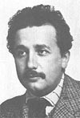
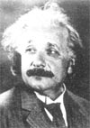
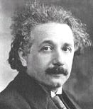
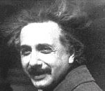

| LevSelector.com |
Collected Quotes from Albert Einstein
· "Any intelligent fool can make things bigger, more complex, and more violent. It takes a touch of genius -- and a lot of courage -- to move in the opposite direction."
· "Imagination is more important than knowledge."
· "Gravitation is not responsible for people falling in love."
· "I want to know God's thoughts; the rest are details."
· "The hardest thing in the world to understand is the income tax."
· "Reality is merely an illusion, albeit a very persistent one."
· "The only real valuable thing is intuition."
· "A person starts to live when he can live outside himself."
· "I am convinced that He (God) does not play dice."
· "God is subtle but he is not malicious."
· "Weakness of attitude becomes weakness of character."
· "I never think of the future. It comes soon enough."
· "The eternal mystery of the world is its comprehensibility."
· "Sometimes one pays most for the things one gets for nothing."
· "Science without religion is lame. Religion without science is blind."
· "Anyone who has never made a mistake has never tried anything new."
· "Great spirits have often encountered violent opposition from weak minds."
· "Everything should be made as simple as possible, but not simpler."
· "Common sense is the collection of prejudices acquired by age eighteen."
· "Science is a wonderful thing if one does not have to earn one's living at it."
· "The secret to creativity is knowing how to hide your sources."
· "The only thing that interferes with my learning is my education."
· "God does not care about our mathematical difficulties. He integrates empirically."
· "The whole of science is nothing more than a refinement of everyday thinking."
· "Technological progress is like an axe in the hands of a pathological criminal."
· "Peace cannot be kept by force. It can only be achieved by understanding."
· "The most incomprehensible thing about the world is that it is comprehensible."
· "We can't solve problems by using the same kind of thinking we used when we created them."
· "Education is what remains after one has forgotten everything he learned in school."
· "The important thing is not to stop questioning. Curiosity has its own reason for existing."
· "Do not worry about your difficulties in Mathematics. I can assure you mine are still greater."
· "Equations are more important to me, because politics is for the present, but an equation is something for eternity."
· "If A is a success in life, then A equals x plus y plus z. Work is x; y is play; and z is keeping your mouth shut."
· "Two things are infinite: the universe and human stupidity; and I'm not sure about the the universe."
· "As far as the laws of mathematics refer to reality, they are not certain, as far as they are certain, they do not refer to reality."
· "Whoever undertakes to set himself up as a judge of Truth and Knowledge is shipwrecked by the laughter of the gods."
· "I know not with what weapons World War III will be fought, but World War IV will be fought with sticks and stones."
· "In order to form an immaculate member of a flock of sheep one must, above all, be a sheep."
· "The fear of death is the most unjustified of all fears, for there's no risk of accident for someone who's dead."
· "Too many of us look upon Americans as dollar chasers. This is a cruel libel, even if it is reiterated thoughtlessly by the Americans themselves."
· "Heroism on command, senseless violence, and all the loathsome nonsense that goes by the name of patriotism -- how passionately I hate them!"
· "No, this trick won't work...How on earth are you ever going to explain in terms of chemistry and physics so important a biological phenomenon as first love?"
· "My religion consists of a humble admiration of the illimitable superior spirit who reveals himself in the slight details we are able to perceive with our frail and feeble mind."
· "Yes, we have to divide up our time like that, between our politics and our equations. But to me our equations are far more important, for politics are only a matter of present concern. A mathematical equation stands forever."
· "The release of atom power has changed everything except our way of thinking...the solution to this problem lies in the heart of mankind. If only I had known, I should have become a watchmaker."
· "Great spirits have always found violent opposition from mediocrities. The latter cannot understand it when a man does not thoughtlessly submit to hereditary prejudices but honestly and courageously uses his intelligence."
· "The most beautiful thing we can experience is the mysterious. It is the source of all true art and all science. He to whom this emotion is a stranger, who can no longer pause to wonder and stand rapt in awe, is as good as dead: his eyes are closed."
· "A man's ethical behavior should be based effectually on sympathy, education, and social ties; no religious basis is necessary. Man would indeeded be in a poor way if he had to be restrained by fear of punishment and hope of reward after death."
· "The further the spiritual evolution of mankind advances, the more certain it seems to me that the path to genuine religiosity does not lie through the fear of life, and the fear of death, and blind faith, but through striving after rational knowledge."
· "Now he has departed from this strange world a little ahead of me. That means nothing. People like us, who believe in physics, know that the distinction between past, present, and future is only a stubbornly persistent illusion."
· "You see, wire telegraph is a kind of a very, very long cat. You pull his tail in New York and his head is meowing in Los Angeles. Do you understand this? And radio operates exactly the same way: you send signals here, they receive them there. The only difference is that there is no cat."
· "One had to cram all this stuff into one's mind for the examinations, whether one liked it or not. This coercion had such a deterring effect on me that, after I had passed the final examination, I found the consideration of any scientific problems distasteful to me for an entire year."
· "...one of the strongest motives that lead men to art and science is escape from everyday life with its painful crudity and hopeless dreariness, from the fetters of one's own ever-shifting desires. A finely tempered nature longs to escape from the personal life into the world of objective perception and thought."
· "He who joyfully marches to music rank and file, has already earned my contempt. He has been given a large brain by mistake, since for him the spinal cord would surely suffice. This disgrace to civilization should be done away with at once. Heroism at command, how violently I hate all this, how despicable and ignoble war is; I would rather be torn to shreds than be a part of so base an action. It is my conviction that killing under the cloak of war is nothing but an act of murder."
· "A human being is a part of a whole, called by us _universe_, a part limited in time and space. He experiences himself, his thoughts and feelings as something separated from the rest... a kind of optical delusion of his consciousness. This delusion is a kind of prison for us, restricting us to our personal desires and to affection for a few persons nearest to us. Our task must be to free ourselves from this prison by widening our circle of compassion to embrace all living creatures and the whole of nature in its beauty."
· "Not everything that counts can be counted, and not everything that can be counted counts." (Sign hanging in Einstein's office at Princeton)
-------------------------------------------------------------------------------------
Copyright: Kevin Harris 1995 (may be freely distributed with this acknowledgement)
| links | home - top of the page - |
•
www.einstein.caltech.edu
- Einstein Papers Project at the California Institute of Technology
•
www.aip.org/history/einstein/
- biography of Einstein - by American Institute of Physics